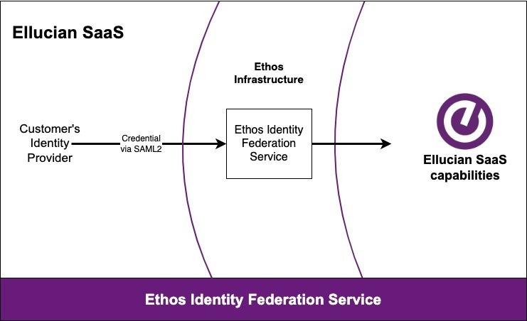

EIFS overview
Ethos Identity Federation Service (EIFS) is a cloud-based, identity and access federation point that provides Ellucian customers with a single point to integrate with an identity provider. It supports the SAML 2.0 protocol for federation to enable single sign-on into Ellucian SaaS solutions.
EIFS is a multi-tenant SaaS solution that is scalable, secure, and easy to upgrade, ensuring that Ellucian customers are more effectively protected from security vulnerabilities.
Going forward, EIFS will be used for all authentication into Ellucian SaaS services.

Procedure overview
Implementing EIFS involves both steps performed by Ellucian and steps performed by your institution. Typically, your institution works with the Ellucian project manager to exchange information during the implementation.
| Typical order | Ellucian does these steps | The institution does these steps | Procedure |
|---|---|---|---|
| 1 | Request basic information about the institution's identity provider setup. | ||
| 2 | Provide basic information (identity provider type and contact information) to Ellucian. | Send information about your identity provider setup to Ellucian | |
| 3 | Set up a tenant in EIFS for the institution. Provide the institution with IdP-specific detailed instructions for setting up the identity provider for EIFS. |
||
| 4 | Use the IdP-specific detailed instructions provided by Ellucian to:
|
Set up your identity provider for EIFS | |
| 5 | Use the information provided by the institution to complete the setup of the EIFS tenant. Provide the institution with a test URL. |
||
| 6 | Use the URL provided by Ellucian to test the SAML authentication. | Test the SAML authentication | |
| 7 | In the institution's EIFS tenant, set up EIFS as the identity provider for Ellucian SaaS solutions such as Banner SaaS or Colleague SaaS. | ||
| The steps below are used to set up access to Ellucian Experience through EIFS. | |||
| 8 | In the institution's EIFS tenant, set up Experience as a service provider. Provide the institution with information needed to set up EIFS as the identity provider for Experience. |
||
| 9 | In Experience Setup, use the information provided by Ellucian to set up EIFS as the identity provider for Experience. | Set up EIFS as the identity provider for Experience | |
| 10 | In your identity provider, set up the role and user ID claims needed to support Experience. Provide information about those claims to Ellucian. |
Set up claims for Experience | |
| 11 | In the institution's EIFS tenant, use the information provided by the customer to set up the claims created to support Experience. | ||
Send information about your identity provider setup to Ellucian
To start the EIFS setup process, your Ellucian project manager will request basic information about your implementation.
Typically, you would need to provide your identity provider type, and contact information for the person at your institution who will work with Ellucian during the EIFS implementation.
Set up your identity provider for EIFS
In your identity provider, create a service provider definition for EIFS and set up claims.
After receiving your identity provider information, Ellucian will start the implementation process by creating a tenant in EIFS for your institution.
- (If needed) A metadata file, typically named something like eifs-sp-metadata.xml, that contains information about your institution's setup within EIFS. The instructions in the PDF will include importing that file into your identity provider.
This metadata file is needed for some identity providers, such as AD FS, but not needed for others, such as Entra ID.
- A PDF with step-by-step instructions, specific to your identity provider type, that cover:
- Creating a service provider definition for EIFS in your identity provider. The service provider definition has different names depending on your identity provider, such as relying party in AD FS and enterprise application in Entra ID.
- Setting up the required attributes and claims.
- Extracting information from your identity provider, such as a metadata URL, and sending it to Ellucian.
Ellucian will use the information you provide to complete the setup of your institution's tenant in EIFS.
Test the SAML authentication
After completing the setup of your EIFS tenant, Ellucian will provide you with a test URL to test the federated authentication.
Instructions for testing the federated authentication are included in the same PDF that Ellucian provided previously for identity provider setup.
Set up access to Ellucian Experience through EIFS
Set up EIFS as the identity provider for Experience
In Experience Setup, enter information about EIFS to support the connection between EIFS and Experience.
Before you begin
- Service provider issuer
- Identity provider entry point
- Identity provider logout URL
- Identity provider public certificate
Procedure
Set up claims for Experience
Set up the claims in your identity provider that support Ellucian Experience.